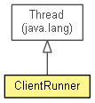

org.waarp.openr66.commander
Class ClientRunner
java.lang.Object
 java.lang.Thread
org.waarp.openr66.commander.ClientRunner
java.lang.Thread
org.waarp.openr66.commander.ClientRunner
- All Implemented Interfaces:
- Runnable
public class ClientRunner
- extends Thread

Client Runner from a TaskRunner
- Author:
- Frederic Bregier
| Methods inherited from class java.lang.Thread |
activeCount, checkAccess, clone, countStackFrames, currentThread, destroy, dumpStack, enumerate, getAllStackTraces, getContextClassLoader, getDefaultUncaughtExceptionHandler, getId, getName, getPriority, getStackTrace, getState, getThreadGroup, getUncaughtExceptionHandler, holdsLock, interrupt, interrupted, isAlive, isDaemon, isInterrupted, join, join, join, resume, setContextClassLoader, setDaemon, setDefaultUncaughtExceptionHandler, setName, setPriority, setUncaughtExceptionHandler, sleep, sleep, start, stop, stop, suspend, toString, yield |
activeRunners
public static ConcurrentLinkedQueue<ClientRunner> activeRunners
ClientRunner
public ClientRunner(NetworkTransaction networkTransaction,
DbTaskRunner taskRunner,
R66Future futureRequest)
getNetworkTransaction
public NetworkTransaction getNetworkTransaction()
- Returns:
- the networkTransaction
getTaskRunner
public DbTaskRunner getTaskRunner()
- Returns:
- the taskRunner
getLocalChannelReference
public LocalChannelReference getLocalChannelReference()
- Returns:
- the localChannelReference
run
public void run()
- Specified by:
run in interface Runnable- Overrides:
run in class Thread
incrementTaskRunerTry
public boolean incrementTaskRunerTry(DbTaskRunner runner,
int limit)
- Parameters:
runner - limit -
- Returns:
- True if the task was run less than limit, else False
runTransfer
public R66Future runTransfer()
throws OpenR66RunnerErrorException,
OpenR66ProtocolNoConnectionException,
OpenR66ProtocolPacketException,
OpenR66ProtocolNotYetConnectionException
- True transfer run (can be called directly to enable exception outside any executors)
- Returns:
- The R66Future of the transfer operation
- Throws:
OpenR66RunnerErrorException
OpenR66ProtocolNoConnectionException
OpenR66ProtocolPacketException
OpenR66ProtocolNotYetConnectionException
tryAgainTransferOnOverloaded
public R66Future tryAgainTransferOnOverloaded(boolean retry,
LocalChannelReference localChannelReference)
throws OpenR66RunnerErrorException,
OpenR66ProtocolNoConnectionException,
OpenR66ProtocolPacketException,
OpenR66ProtocolNotYetConnectionException
- In case an overloaded signal is returned by the requested
- Parameters:
retry - if True, it will retry in case of overloaded remote server, else it just stopslocalChannelReference -
- Returns:
- The R66Future of the transfer operation
- Throws:
OpenR66RunnerErrorException
OpenR66ProtocolNoConnectionException
OpenR66ProtocolPacketException
OpenR66ProtocolNotYetConnectionException
finishTransfer
public R66Future finishTransfer(boolean retry,
LocalChannelReference localChannelReference)
throws OpenR66RunnerErrorException
- Finish the transfer (called at the end of runTransfer)
- Parameters:
retry - if True, it will retry in case of overloaded remote server, else it just stopslocalChannelReference -
- Returns:
- The R66Future of the transfer operation
- Throws:
OpenR66ProtocolNotYetConnectionException
OpenR66ProtocolPacketException
OpenR66ProtocolNoConnectionException
OpenR66RunnerErrorException
initRequest
public LocalChannelReference initRequest()
throws OpenR66ProtocolNoConnectionException,
OpenR66RunnerErrorException,
OpenR66ProtocolPacketException,
OpenR66ProtocolNotYetConnectionException
- Initialize the request
- Returns:
- the localChannelReference holding the transfer request
- Throws:
OpenR66ProtocolNoConnectionException
OpenR66RunnerErrorException
OpenR66ProtocolPacketException
OpenR66ProtocolNotYetConnectionException
changeUpdatedInfo
public void changeUpdatedInfo(org.waarp.common.database.data.AbstractDbData.UpdatedInfo info,
ErrorCode code,
boolean force)
- Change the UpdatedInfo of the current runner
- Parameters:
info -
setRecvThroughHandler
public void setRecvThroughHandler(RecvThroughHandler handler)
- Parameters:
handler - the handler to set
setSendThroughMode
public void setSendThroughMode()
getSendThroughMode
public boolean getSendThroughMode()
Copyright © 2009-2013 Waarp. All Rights Reserved.